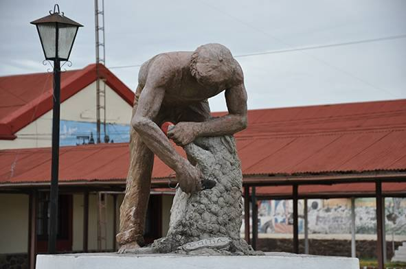

El pueblo de la bifurcación
Hacia 1883 llegaron las cuadrillas de obreros que construyeron la vía entre Salto y Bella Unión, con un ramal hacia la ciudad de Artigas. Aquí está el punto donde la vía se divide. La estación se llamó Isla Cabellos y el pueblo conservó ese nombre hasta que una ley de 1956 lo rebautizó Baltasar Brum, en homenaje al presidente nacido en el departamento.
Según el censo de 2011 viven unas 2.500 personas. La ganadería y el arroz son las actividades principales, y la esquila es una zafra muy importante para los trabajadores de la zona.
Museo Municipal
Funciona en la estación de AFE, entre las calles 25 de Agosto y Dr. Errandonea. Exhibe antigüedades de la zona, vehículos, recados y otros objetos de la vida de campo.
Fotos

Foto: Raul Zapata · CC BY-SA 4.0